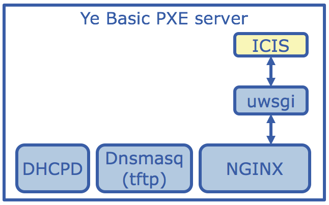

Bulk Provisioning
Data centers tend to land and install new machines in bulk. When dealing with large quantities of new machines or hardware upgrades, data center admins may need a way to install and configure with a minimal amount of effort. To support this use case, the Clear Linux team has developed some tooling and instructions for how to bulk-load machines with Clear Linux using iPXE.
This bulk provisioning scenario is a variation on the Network booting scenario,
with some alterations to facilitate installing and configuring many hosts. The Clear
Linux installer (Ister) was augmented to detect and find cloud-init configuration
data during the install. When this data is found, a cloud-init file is fetched,
and the host, after being rebooted by ister, uses micro-config drive (ucf) to
configure the host as directed by the cloud-init configuration file.
In our pilot of this workflow, we used clear-cloud-init (which will become ucf - micro config drive)
to install the trust relationships for the host to be further managed by Ansible. The
cloud-init configuration file was served by a simple little web application
that Ister knows how to query for host configuration data. This allowed us to
simultaneously power-on one hundred machines, each of which
* picked up the Clear Linux installer via PXE,
* installed Clear Linux,
* rebooted, and
* entered into a mode that can be managed through Ansible.
The web application that serves cloud-init configurations to Ister is uninspiringly named
“Ister Cloud Init Service” (ICIS), and is available at github - https://github.com/clearlinux/ister-cloud-init-svc
One nice attribute of this system is that once the iPXE bits are created, many installer behaviors can be configured without having to regenerate the iPXE bits.
System Architecture
The following diagrams illustrate the system architecture.
As can be seen, ICIS is a web application (specifically a Flask application, hence managed by uwsgi
under nginx) that can run anywhere visible to hosts booting from PXE. In our example, we simply
hosted it on the same system serving the pxe content.
The following diagram illustrates the flow of information between the pxe server and a host booting into the installer via pxe. This diagram is intended to show the logical flow of information, and is not a literal depiction of the protocol-level exchanges.

Configuration Overview
Here is a high-level overview describing set up and configuration of a bulk-provisioning solution.
First, stand up an iPXE server as described in the Network booting docs. Note that you will be generating your own artifacts to be served by PXE in a later step.
Land Ister Cloud Init Service on the pxe server. The README in the ICIS github repo has directions on how to install and configure.
Generate the installer that will load and boot over PXE. Copy the relevant files into the appropriate location on the iPXE server.
A pxe installer is generated for every release of Clear Linux OS. It can be found alongside the published images in https://download.clearlinux.org/releases/XXXXX/clear/clear-XXXXX-pxe.tar.xz
Alternatively, use the create_pxe.sh script to roll your own. Note this creates the pxe-installer from the “provisioning” installer in Clear Linux. This is a touchless installer that takes all installation information from a config file. You can get this image from a given Clear Linux release by looking in https://download.clearlinux.org/releases/XXXX/clear/ where XXXX is a Clear Linux release number. Just download the image alongside the
create_pxe.shscript and name itprovision.img.Stage config files for
isterthat will govern Ister’s behavior. This includes modifying the script for ipxe boot, getting it to pass an additional parameter to the kernel.The magic that ties all of this together is that the pxe script conveys to ister the location of its configuration files via the kernel command line of the installer it kicks off. The kernel preserves its command line precisely, and ister inspects it via
/proc/cmdline.Here is an example pxe script:
#!ipxe kernel linux quiet rdinit=/usr/lib/systemd/systemd-bootchart initcall_debug tsc=reliable no_timer_check noreplace-smp rw initrd=initrd isterconf=http://192.168.1.1/icis/static/ister/ister.conf initrd initrd boot
When the pxe installer kicks off
ister, it will make note of the location of theconffile that was given on the kernel command line, and fetch the file. This file then tellsisterwhere to get the json template file that describes partition schemes, and which version of Clear Linux to install. This means that so long as the contents of a release are compatible with the version of software update (swupd) in the installer, this pxe installer can be told to install a newer version of Clear Linux simply by tweaking the json on the web server, rather than rolling an entirely new installer.One other important piece of configuration data in the json configuration file is the location of an ICIS configuration service. Ister will query ICIS for a role using the MAC address of the network interface being used to communicate with the ICIS service. Ister will then fetch that specific
cloud-initfile andconfigure ucdto run on first-boot against that config file.The Ister Cloud Init Service github repo has example ister configuration files under
static/ister.Here is an example ister-template.json file.
{ "DestinationType" : "phyiscal", "PartitionLayout" : [ { "disk" : "/dev/sda", "partition" : 1, "size" : "64M", "type" : "EFI" }, { "disk" : "/dev/sda", "partition" : 2, "size" : "2G", "type" : "linux" } ], "FilesystemTypes" : [ { "disk" : "/dev/sda", "partition" : 1, "type" : "vfat" }, { "disk" : "/dev/sda", "partition" : 2, "type" : "ext4" } ], "PartitionMountPoints" : [ { "disk" : "/dev/sda", "partition" : 1, "mount" : "/boot" }, { "disk" : "/dev/sda", "partition" : 2, "mount" : "/" } ], "Version": 6580, "Bundles": ["kernel-native", "os-core-update", "os-core", "bootloader", "sysadmin-hostmgmt", "openssh-server"], "PostNonChroot": ["./installation-image-post-update-version.py"], "IsterCloudInitSvc": ["http://192.168.1.1/icis/"] }
Configure ICIS to map MAC addresses to role files appropriately. Then create the role files, which are
cloud-initconfiguration files. Note, it is possible to simply specify a “default” role for any unmatched MAC address; this may be handy when all install targets are to be configured identically.Final pre-flight check. Assuming your iPXE server is at 192.168.1.1, all of the following urls need to be working.
Boot an iPXE client and watch Clear Linux install.